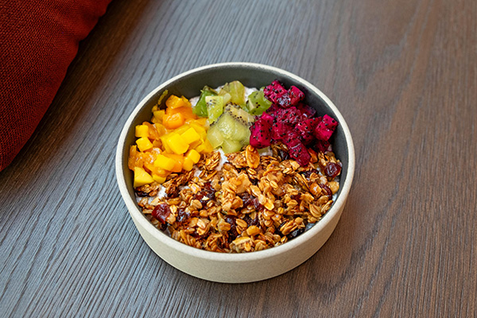

Power Greek Yogurt Bowl

Ingredients
Instructions
- Scoop the plain Greek yogurt into a serving bowl.
- Arrange the mixed berries and granola evenly over the top of the yogurt.
- Sprinkle the chia seeds over the bowl for extra fiber and crunch.
- Add a light drizzle of honey if you prefer a touch of extra sweetness.
- Enjoy immediately as a healthy breakfast or refreshing snack!